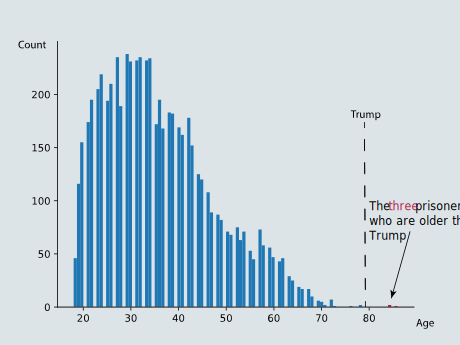
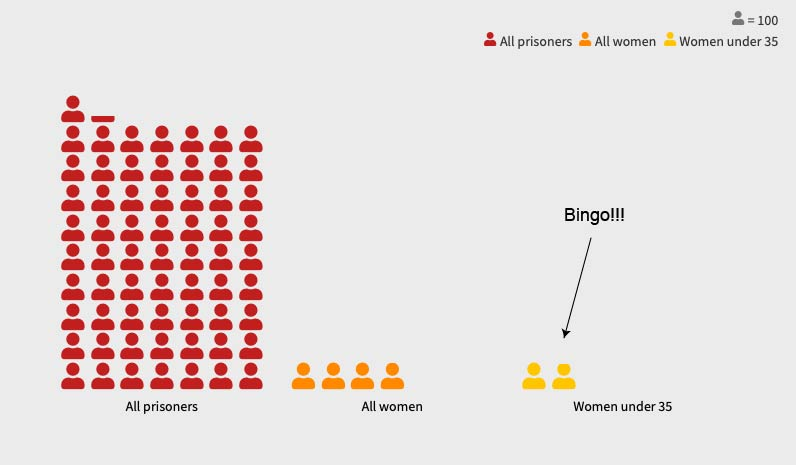
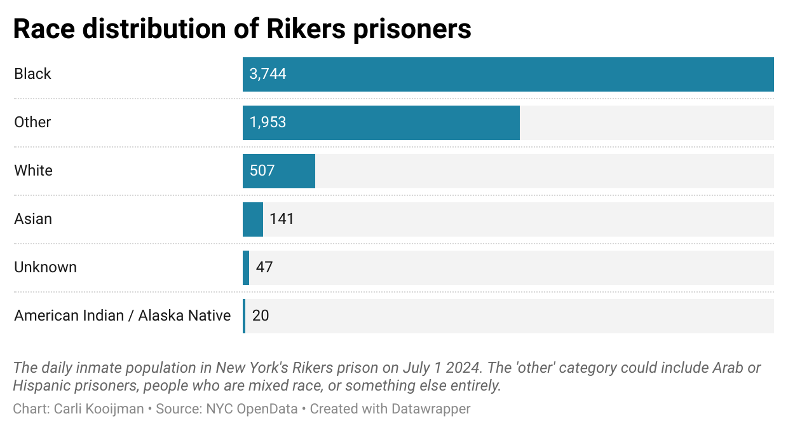
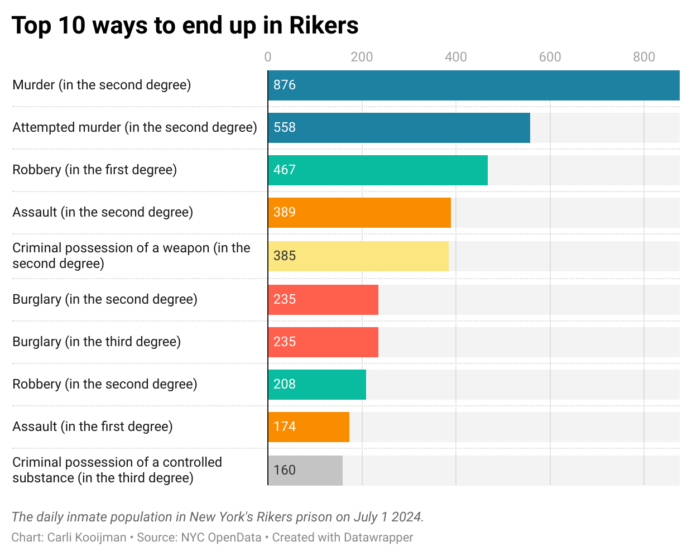

From the Trump Towers to Rikers Island?
If Donald Trump is sentenced to do time in New York’s infamous Rikers prison, what would it be like? This data analysis gives a glimpse.
If Donald Trump is sentenced to do time in New York’s infamous Rikers prison, what would it be like? This data analysis gives a glimpse.
May 31st was a historic day: Donald Trump became the first US president to be convicted of a crime. A New York jury found him guilty for paying hush money to porn actress Stormy Daniels and falsifying business records to cover it up ahead of the 2016 election.
It is unclear if and where Trump would go to prison: sentencing is delayed until mid-September. However, Rikers island is a realistic option, especially if his sentence is shorter than a year. Mayor Eric Adams has already said the facility is "ready" to receive mister Trump.
This story explores what his day-to-day prison life could be like, from potential prison wives to the possibility of finding bunkmates his age, based on the NYC OpenData Daily Inmate Population Database. The data is from July first 2024, when Rikers counted almost 6500 prisoners.
Oldest prisoner?
You have likely heard that Trump and Biden, at 78 and 81 respectively, are their parties' oldest nominees. But did you know Trump might be one of the oldest Rikers prisoners as well?
Trump would make the top five oldest prisoners. However, there are still three people who are his senior: two 84-year-old men and the 86-year-old matriarch convicted of murder.
Prison wife pool
Technically, male and female prisoners are separated in Rikers prison. But would it be unlike Trump to try to get around that somehow to get a prison wife?
Of course, Trump wouldn't just try and date anyone. In 2002, the then 56-year-old said that he typically dumps girlfriends at 35, because they have "too much life experience." His wife Melania seems to be an exception. How many Rikers prisoners fit Trump's criteria?
Therefore, even if his wife leaves him if he goes behind bars, there are quite some fish in Trump's preferred pool: 190 to be precise.
Bunkmate battle
While he calls himself "the least racist person," others say Trump has a a long history of racist comments. In Rikers, this may not land well.
There is an over 90 percent chance that Trump will get a non-White bunkmate. That he once said: "Laziness is a trait in blacks. It really is, I believe that," is not the best start to a lifelong friendship.
Partner in crime?
Most criminals in Rikers aren't there for the same reason as Trump would be: an offense involving false written statements. Rather, the most common reason to end up in Rikers is (attempted) murder.
As per July 1, 2024, only one other prisoner was in Rikers for a similar crime as Trump. This prisoner is a 45-year-old man with mental health issues who entered Rikers late June. Perhaps the two will become partners in crime...
To be sure, no-one knows if Trump will end up Rikers yet. But if he does, his team of secret service agents would be well-advised to take this analysis into consideration ;)